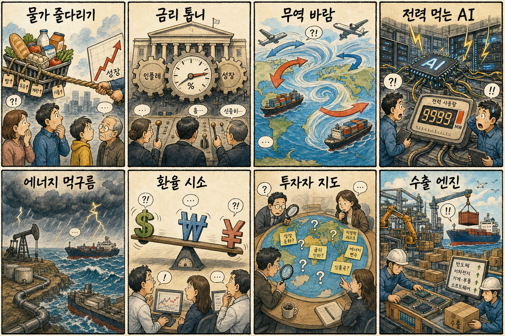
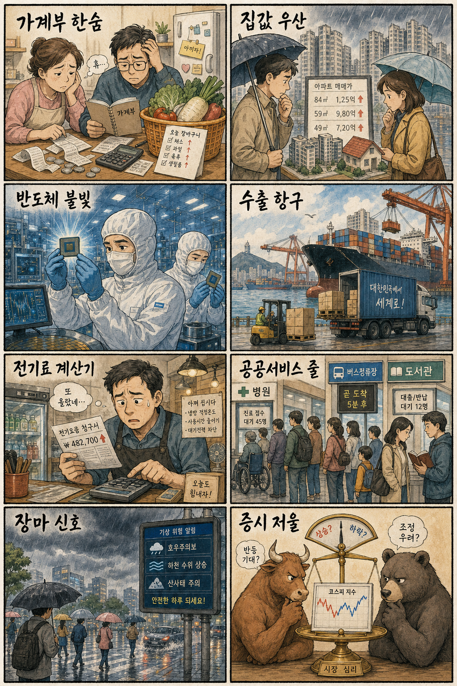

미국 증시 마감과 한국 증시 영향
직전 미국장·독립기념일 연휴 반영미국장은 독립기념일 연휴 영향으로 직전 정규장 이후 신규 마감 데이터가 제한적입니다. 오늘 한국장에는 반도체 실적 대기, AI 데이터센터 전력 병목, 중동·홍해 리스크, 24시간 외환거래 개시가 더 직접적인 장전 변수입니다.
AI 전력 병목데이터센터 투자가 전력·허가·냉각 수요로 확산되고 있습니다.
반도체 실적 관문삼성전자 잠정 실적과 SK하이닉스 ADR 일정이 대형주 수급을 흔듭니다.
중동·홍해 긴장이란·이스라엘 발언과 홍해 화물선 피격이 유가·해운 리스크를 남깁니다.
환율 새 국면원·달러 24시간 거래가 시작돼 야간 변동성 관리가 중요합니다.
핵심 요약 카드 4개
오늘 장 전 의사결정용① 반도체 정책클러스터 전력·용수와 메가 프로젝트 점검이 소부장·인프라 기대를 자극합니다.
② AI 인프라15GW급 데이터센터 구상과 전력 허가 경쟁이 전력기기 테마를 유지합니다.
③ 수급 변동성삼전닉스 레버리지 경고로 대형 반도체 장중 수급 확대를 경계해야 합니다.
④ 지정학 비용홍해·이란 변수는 해운·에너지 비용과 방산 심리를 동시에 움직입니다.
📈 어제 연결 아이디어 3건 — 전일 정규장 등락률
네이버페이 증권 일별시세 확인 · 계산 도구 사용| 종목 | 코드 | 종가 비교 | 기준 거래일 | 등락률 | 출처 |
|---|
| 삼성전자 | 005930.KS | 2026-07-02 286,000원 → 2026-07-03 309,500원 | 2026-07-03 | +8.22% | 출처보기 |
| HD현대일렉트릭 | 267260.KS | 2026-07-02 969,000원 → 2026-07-03 945,000원 | 2026-07-03 | -2.48% | 출처보기 |
| 한화에어로스페이스 | 012450.KS | 2026-07-02 1,116,000원 → 2026-07-03 1,175,000원 | 2026-07-03 | +5.29% | 출처보기 |
주요 지수
- 다우·S&P500: 독립기념일 연휴 직전 장 이후 정책·금리 뉴스 확인 구간입니다.
- 나스닥: AI 전력비와 서버 칩 경쟁이 성장주 멀티플의 핵심 변수입니다.
- 필라델피아 반도체: 메모리 가격 방어와 중국 기술 추격 뉴스가 국내 반도체 기대와 경계를 동시에 만듭니다.
강세/약세 섹터
- 강세 후보: 반도체 인프라, 전력기기, 전선, 데이터센터, 냉각, 방산.
- 약세 경계: 고환율 비용 부담 내수주, 해운비 민감 수출입주, 레버리지 과열 종목.
- 변동성: 삼성전자 실적 발표 전후와 원·달러 야간 거래 첫 주 수급.
전날 급등/폭락 주요 미국 주식과 원인
연휴 직전 장 이후 뉴스 중심- AI 서버·반도체: 퀄컴·메타 서버칩 협력, 중국 메모리 가격 방어, AI 데이터센터 전력 병목이 칩·전력 밸류체인을 동시에 자극합니다.
- 전력·유틸리티: 폭염과 데이터센터 전력 수요가 청정전력·원전·냉각기술 기대를 키웁니다.
- 방산·에너지·해운: 이란 발언과 홍해 피격 보도가 위험 프리미엄을 재점검하게 만듭니다.
오늘 한국 증시 영향
장전 체크반도체실적 대기와 클러스터 정책 뉴스가 삼성전자·SK하이닉스 및 소부장 수급을 좌우합니다.
전력 인프라AI 데이터센터 15GW 구상과 전력·허가 병목이 전력기기 재료입니다.
환율24시간 외환거래 첫 주라 야간 원화 변동과 외국인 수급 반응이 중요합니다.
지정학이란·홍해 리스크는 방산·해운·정유와 항공·여행 비용에 엇갈린 영향을 줍니다.
🔗 오늘 연결 아이디어 3건
투자권유 아님 · 단기 관찰 리스트관찰 아이디어SK하이닉스 000660.KS
관련 테마AI 메모리 가격 방어·ADR 상장 일정
연결 이유CXMT 저가 공세 완화 보도와 AI 메모리 수요는 HBM·고부가 D램 강자인 SK하이닉스의 가격 협상력 기대와 연결됩니다.
단기 확인 포인트10일 ADR 상장 관련 외국인 수급, HBM 가격 코멘트, 레버리지 ETF 변동성
관찰 아이디어HD현대일렉트릭 267260.KS
관련 테마AI 데이터센터 전력·허가 병목
연결 이유SKT 15GW 데이터센터 구상과 전력 허가 경쟁은 변압기·송배전 설비 대표주에 직접 연결됩니다.
단기 확인 포인트북미·국내 수주 공시, 전력망 정책 발언, 전일 조정 후 거래대금 회복
관찰 아이디어대한전선 001440.KS
관련 테마반도체 클러스터 전력망·데이터센터 증설
연결 이유반도체 클러스터 전력·용수 예산 논의와 데이터센터 전력망 확충은 초고압 케이블 수요 기대를 키웁니다.
단기 확인 포인트클러스터 전력망 발주 일정, 해외 수주 뉴스, 구리 가격과 환율
오늘 체크 이벤트
오전 기준국내 정책반도체 클러스터 민관 점검회의와 3대 메가 프로젝트 후속 발언
실적삼성전자 2분기 잠정 실적 발표 전 컨센서스 변화
환율원·달러 24시간 거래 첫날 야간 스프레드와 외국인 수급
해외이란·이스라엘 발언, 홍해 물류 안전, 미국 FOMC 의사록 대기
🤖 AI·테크 핵심 소식
반도체·생성형AI·AI칩·데이터센터·전력- 오늘 AI·테크 핵심은 AI 메모리 가격 방어, 데이터센터 전력·허가 병목, 서버칩 다변화입니다.
- 한국장에서는 메모리 대형주와 전력기기·전선·냉각·데이터센터 인프라를 분리해서 보는 전략이 필요합니다.
AI·테크 주요 뉴스 5개
내용요약 → 예상여파 → 기사/영상01
메모리·AI
“싸게 팔 이유 없다”는 CXMT의 반전… AI 호황에 사라진 ‘중국발 저가 공세’ - 조선비즈 - Chosunbiz
Chosunbiz · 06:02 KST
내용요약 중국 CXMT가 AI 호황 속에서 저가 공세보다 가격 방어를 택하고 있다는 보도입니다. 메모리 업황의 무게중심이 범용 공급과잉 우려에서 AI 수요·가격 협상력으로 옮겨가고 있습니다.
예상여파 삼성전자·SK하이닉스의 메모리 가격 기대에는 우호적이나, 중국 업체의 기술 추격 속도가 빨라질 경우 중장기 경쟁 프리미엄은 재평가될 수 있습니다.
02
AI 인프라
SKT “2035년까지 최대 15GW 규모 AI 데이터센터 조성” - 동아일보
동아일보 · 00:30 KST
내용요약 SKT가 2035년까지 최대 15GW 규모 AI 데이터센터 조성을 추진한다는 기사입니다. 통신·클라우드 기업의 AI 경쟁이 전력 확보와 대규모 인프라 투자 경쟁으로 확장됐습니다.
예상여파 전력기기·전선·냉각·건설·데이터센터 운용 밸류체인에는 수주 기대가 붙을 수 있고, 전력망 인허가가 실제 속도를 가를 변수입니다.
03
데이터센터
AI 데이터센터, 이제는 ‘전력·허가’가 승부 가른다 - 글로벌이코노믹
글로벌이코노믹 · 04:05 KST
내용요약 AI 데이터센터 경쟁에서 GPU 확보만큼 전력과 허가가 중요해졌다는 보도입니다. 인프라 병목이 AI 서비스 확장의 새 비용 항목으로 부상했습니다.
예상여파 AI 수혜주가 소프트웨어와 칩을 넘어 변압기·전력망·냉각·부지 관련주로 확산될 수 있습니다.
04
AI칩 경쟁
퀄컴(QCOM), 메타 손잡고 서버 칩 시장 지각변동 예고...엔비디아·인텔 넘볼까 - 코인리더스
코인리더스 · 05:00 KST
내용요약 퀄컴이 메타와 서버 칩 시장에서 협력하며 엔비디아·인텔 중심 구도에 도전한다는 기사입니다. 추론용 AI칩 경쟁이 빅테크 맞춤형 칩으로 넓어지고 있습니다.
예상여파 엔비디아 독점 프리미엄에는 견제 심리가 생길 수 있고, 국내 메모리·패키징·기판 수요는 칩 다변화의 수혜를 받을 수 있습니다.
05
전력·원전
AI 전기·물 부족 해법 되나…소형 원자로와 엔비디아 냉각기술이 만났다 - 에너지안전신문
에너지안전신문 · 01:13 KST
내용요약 AI 전력과 냉각수 부족 문제의 해법으로 소형 원자로와 냉각기술이 함께 거론된 보도입니다. 데이터센터 투자가 에너지 기술과 직접 결합되는 흐름입니다.
예상여파 원전·전력기기·냉각장비 테마에는 중장기 기대가 유지되지만, 규제와 상용화 일정 확인 전까지 단기 과열은 경계해야 합니다.
🌍 세계뉴스 보고
KST 당일 발행 국제 기사- 세계뉴스는 이란·이스라엘 긴장, 홍해 물류 리스크, 미국 폭염, 중국 AI 인재 유치로 압축됩니다.
- 시장 연결은 유가·해운비·방산·전력 수요·미중 기술 경쟁입니다.
세계 주요 뉴스 5개
내용요약 → 예상여파 → 기사/영상01
중동
이란, 美건국행사 맞춰 하메네이 장례식… 곳곳서 “복수를” - 동아일보
동아일보 · 04:30 KST
내용요약 이란에서 미국 건국 기념일에 맞춰 하메네이 장례식과 복수 구호가 이어졌다는 기사입니다. 휴전 이후에도 대중 정서와 정치 메시지가 긴장을 남기고 있습니다.
예상여파 유가와 해운·방산 심리가 다시 민감해질 수 있으며, 중동 협상 뉴스의 톤 변화가 한국 에너지 비용에도 연결됩니다.
02
이스라엘·미국
네타냐후 "이란 문제, 美와 균열 없어…우린 '모범 동맹'" - 연합뉴스
연합뉴스 · 03:50 KST
내용요약 네타냐후가 이란 문제에서 미국과 균열이 없다고 밝히며 동맹 공조를 강조했다는 보도입니다. 핵 문제와 후속 대응에서 미국·이스라엘 조율이 시장 변수입니다.
예상여파 공조 발언은 억지력 신호이지만 독자 대응 가능성이 커지면 방산·유가·달러 안전자산 선호가 함께 흔들릴 수 있습니다.
03
홍해 물류
영국군 "예멘 홍해서 화물선, 무장 세력에 피격" - 연합뉴스TV
연합뉴스TV · 05:34 KST
내용요약 영국군이 예멘 홍해 인근에서 화물선 피격을 확인했다는 보도입니다. 중동 갈등이 해상 물류 리스크로 재확산될 수 있음을 보여줍니다.
예상여파 해운 운임과 보험료 변동성이 커질 수 있고, 국내 수출기업의 운송비와 납기 부담을 다시 점검해야 합니다.
04
미국 기후
미 폭염으로 최소 25명 사망…열돔 물러나자 이번엔 폭풍우 - 연합뉴스TV
연합뉴스TV · 05:52 KST
내용요약 미국에서 폭염으로 최소 25명이 숨지고 열돔 이후 폭풍우가 예보됐다는 기사입니다. 기후 리스크가 전력 수요와 물류·보험 비용을 동시에 자극하고 있습니다.
예상여파 냉방 전력 수요와 전력망 투자 논의가 커질 수 있으며, 농산물·보험·유틸리티 가격 변동에도 영향을 줄 수 있습니다.
05
중국 기술
노벨 화학상 수상자 중국행…칭화대 인공지능 연구소 이끈다 - 한국일보
한국일보 · 00:55 KST
내용요약 노벨 화학상 수상자가 중국 칭화대 인공지능 연구소를 이끈다는 보도입니다. 중국의 AI·기초과학 인재 유치가 고도화되고 있습니다.
예상여파 미·중 기술 경쟁은 반도체 장비 규제와 인재 이동 이슈로 확대될 수 있어 국내 반도체·AI 정책에도 압박이 됩니다.
🌍 세계 뉴스 8컷 만평
실제 웹툰/신문만화풍 이미지 · SVG/이모지 카드 아님
구성: 물가·금리·무역·AI 전력·에너지·환율·투자심리·수출을 실제 인물/로고 없이 상징 장면으로 묶은 8컷 웹툰 만평입니다.
🇰🇷 국내뉴스 보고
KST 당일 발행 국내 기사- 국내 이슈는 반도체 클러스터, 메가 프로젝트, 레버리지 수급, 24시간 외환거래, 삼성전자 실적 대기입니다.
- 한국장에서는 정책 수혜 기대와 대형 반도체 변동성을 동시에 관리해야 합니다.
국내 주요 뉴스 5개
내용요약 → 예상여파 → 기사/영상01
반도체 정책
[단독]강훈식 “추가세수, 반도체 클러스터 전력-용수에 써야” - 동아일보
동아일보 · 04:30 KST
내용요약 추가 세수를 반도체 클러스터 전력·용수 인프라에 써야 한다는 발언이 보도됐습니다. 반도체 경쟁력이 공장 투자뿐 아니라 기반시설 속도에 달렸다는 문제의식입니다.
예상여파 전력기기·수처리·건설·송배전 관련주의 정책 기대가 커질 수 있고, 예산 배정과 착공 일정이 단기 재료입니다.
02
메가 프로젝트
李대통령, 반도체 클러스터 점검회의 주재…3대 메가 프로젝트 ‘속도전’ - 동아일보
동아일보 · 05:42 KST
내용요약 이 대통령이 반도체 클러스터 점검회의를 주재하고 3대 메가 프로젝트 속도전을 점검한다는 기사입니다. 정부 주도의 산업 인프라 집행 속도가 장전 핵심 이슈입니다.
예상여파 삼성전자·SK하이닉스 주변 소부장과 전력·용수 인프라 기업에 관심이 몰릴 수 있으나, 실제 발주 공시 확인이 필요합니다.
03
시장 변동성
코스피 뒤흔든 ‘삼전닉스 레버리지’ 경고음…당국, 대책 마련 고심 - 한겨레
한겨레 · 05:00 KST
내용요약 삼성전자·SK하이닉스 레버리지 상품이 코스피 변동성을 키우고 금융당국이 대책을 고심한다는 보도입니다. 대형 반도체 쏠림이 지수 체감 변동을 키우고 있습니다.
예상여파 반도체 대형주의 장중 등락이 ETF 수급을 통해 확대될 수 있어 추격매수보다 수급 안정 여부를 확인해야 합니다.
04
외환시장
24시간 외환시장 열린다…환율 안정 시험대 - 연합뉴스TV
연합뉴스TV · 05:28 KST
내용요약 원·달러 외환시장이 24시간 거래 체제로 들어가 환율 안정 효과를 시험한다는 기사입니다. 야간 변동 흡수와 투기적 움직임이 동시에 관찰 대상입니다.
예상여파 수출기업과 서학개미의 환전 편의는 커지지만, 원화 변동성이 커질 경우 외국인 수급과 내수 비용 부담에 영향을 줄 수 있습니다.
05
반도체 실적
삼성전자 2분기 실적 개봉 박두…‘널뛰기’ 코스피 잠재울까 - v.daum.net
v.daum.net · 05:41 KST
내용요약 삼성전자 2분기 실적 발표를 앞두고 코스피 변동성을 잠재울 수 있을지 주목된다는 보도입니다. 실적 확인 전 대형주 수급이 시장 방향을 좌우합니다.
예상여파 잠정 실적이 기대를 웃돌면 반도체 소부장으로 온기가 확산될 수 있지만, 실망 시 레버리지 수급 청산이 변동성을 키울 수 있습니다.
🇰🇷 국내 뉴스 8컷 만평
실제 웹툰/신문만화풍 이미지 · SVG/이모지 카드 아님
구성: 가계부담·부동산·반도체·수출항구·전기료·공공서비스·장마·증시심리를 일상 장면과 상징물로 표현한 8컷 웹툰 만평입니다.